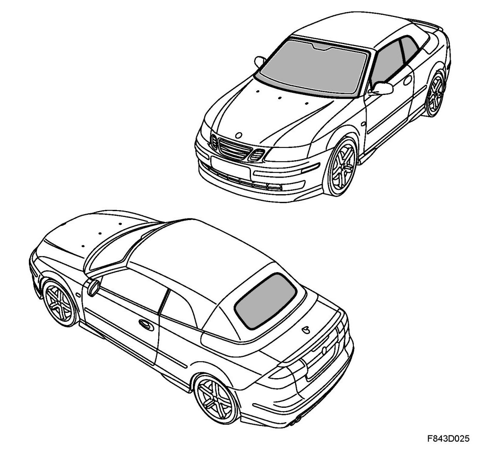
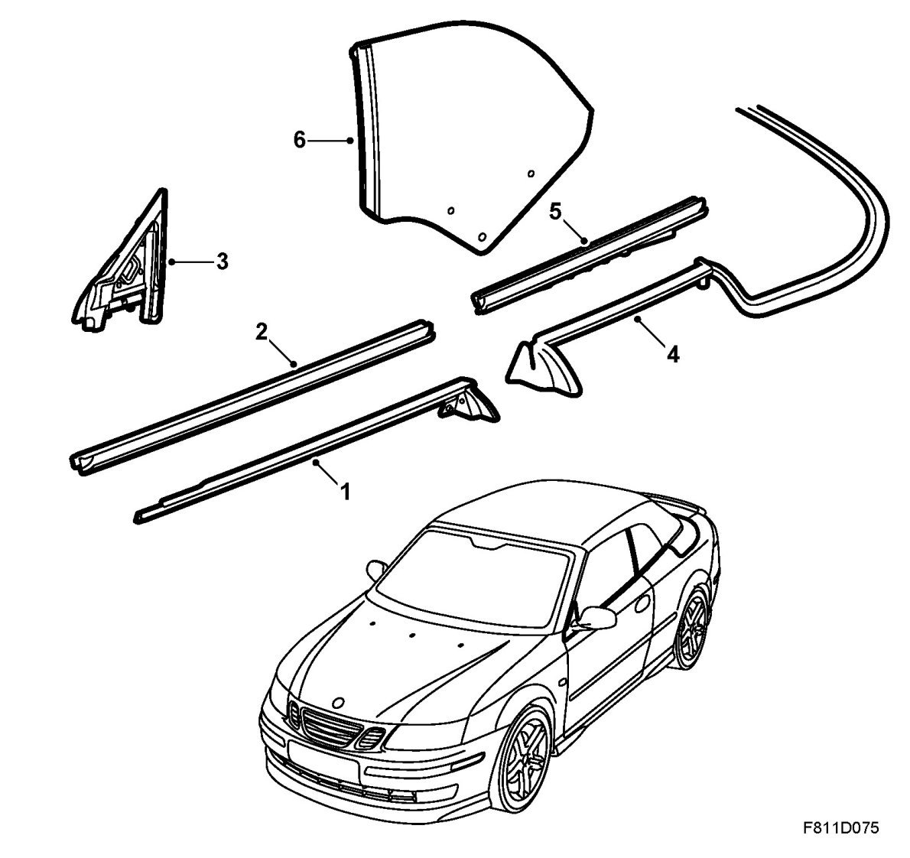

Windscreen, Rear Window And Side Window, CV
Windscreen, Rear Window And Side Window, CV

Windscreen
The windscreen is fixed to the body with adhesive and is a load bearing part of the body structure. In particular the windscreen contributes to the torsional stiffness of the vehicle. Its form and fit have been rigorously tested to comply with the regulations for crash safety.
The heat-absorbant glass contains iron oxide that takes in and stores the heat. During travel, the wind cools the glass and takes with it the stored heat. The heat-absorbant glass leads to reduction of fan speed.
The airbags in the airbag system bear on the windscreen when they are inflated. Therefore, it is extremely important that the windscreen is mounted correctly, both for the function of the car and for the safety of the occupants.
The only glass adhesive that has been crash tested and approved for the after-sales market is Betaseal X 2500. If Saab Automobile AB is to take responsibility for guaranteeing a continued high degree of safety after window replacement, windows must be glued with Betaseal X 2500.
Rear window
The rear window is located with clips between two frames in the soft top. The outer frame is glued to the roof. The upper corners on the inner frame are connected to the soft top mechanism via guide strips. On the short sides of the inner frame, links are fitted which are connected to the soft top mechanism. The guide strips and links steer the rear window when the soft top is raised and lowered. They also determine the raised and retracted end positions of the rear window.
The heat-absorbant glass contains iron oxide that takes in and stores the heat. During travel, the wind cools the glass and takes with it the stored heat. The heat-absorbant glass leads to reduction of fan speed.
On the inside surface of the rear window there are a number of heating wires used for the electrical heating of the window.
Side windows
The door windows are located in a rubber coated holder and a plastic holder in the electrically operated window lifts.
Both rear side windows are mounted with plastic guide bushes and a fixing channel in their electrically operated window lifts.
The door windows and rear side windows are all electrically operated. The passenger door window can be operated up and down with the control on the passenger door. All of the side windows can be operated, either individually or simultaneously from the control on the driver's door.
The heat-absorbant glass contains iron oxide that takes in and stores the heat. During travel, the wind cools the glass and takes with it the stored heat. The heat-absorbant glass leads to reduction of fan speed.
Side window seals

1. Outer weatherstrip, door window
2. Inner weatherstrip, door window
3. Door mirror base seal
4. Outer weatherstrip, rear side window
5. Inner weatherstrip, rear side window
6. Forward seal, rear side window
The outer weatherstrip of the door window (1) seals between the door and the outer surface of the window The strip is pushed onto the flange of the strip holder. The rear end of the strip is fixed with 3 rubber plugs.
The inner weatherstrip of the door window (2) seals between the door and the inside of the window. The strip is pushed onto the flange on the inner panel of the door.
The door mirror base seal (3) seals between the front of the door window, the mirror base and the A-pillar. The seal is screwed to the inner door panel with its integrated holder.
The outer weatherstrip of the rear side window (4) and the soft top cover seal are one part. The combined seal is pushed onto the flange of the seal holder. The forward end of the seal is fixed with 4 rubber plugs.
The inner weatherstrip of the rear side window (5), which seals between the inside of the rear side window and the side wall, is pushed onto the flange of the side window holder.
The forward seal (6) between the rear side window and the door frame is integrated in the rear side window.